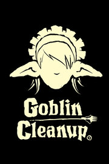

Goblin Cleanup Demo
Goblin Cleanup Demo
Details
|  | |
| Playtime | Not Played |
| Last Activity | Never |
| Added | 7/26/2024 8:14:52 |
| Modified | 7/26/2024 8:15:29 |
| Completion Status | Not Played |
| Library | Steam |
| Source | Steam |
| Platform | PC (Windows) |
| Release Date | |
| Community Score | |
| Critic Score | |
| User Score | |
| Genre | |
| Developer | |
| Publisher | |
| Feature | |
| Links | |
| Tag | |
Description


Have you ever wondered what happens after completing a dungeon, how it is restarted or, better yet, who is in charge of doing it? In Goblin Cleanup, you assume the role of a professional cleaner hired by the dungeon manager to clean and prepare the dungeon for the next adventure. You can perform this task alone or with up to three companions, cooperatively or maybe not so cooperatively!


Be careful because the dungeons are dark and full of terrors, although as a professional cleaner this is not a problem, just don't step on a trap, and keep the monsters fed, you don't want them to eat you, or any of your friends.

You can clean the dungeons with three more employees, just watch what they do, because if they die you will have to clean their pieces and blood, the heroes already leave everything very dirty to make things worse.
Clean the dungeons in cooperative games for 4 players online.
Key Features
- Goblin Maid: What better way to clean up than doing it like a pro? Play as a goblin alongside other goblins.
- Clean: It's your job to clean up the mess, so clean it up you shall! Use your Slimop, mimic, and slime dispenser tool to help you remove all that blood from the floor and ceiling!
- Restore Objects: To ensure the dungeon returns to its original state, you must restore objects and place them back in their original positions.
- Restore Traps: What kind of dungeon would it be without traps? You'll need to restore and reactivate them. Be cautious; there might be traps that weren't triggered by adventurers and are still active.
- Creatures: You'll also need to respawn creatures and dispose of their remains. Additionally, some creatures might not have perished.
- Loot: You'll also need to refill chests with items.
- Procedural Dungeon: Each run will be different from the last with procedurally generated dungeons.
Wishlist & Follow